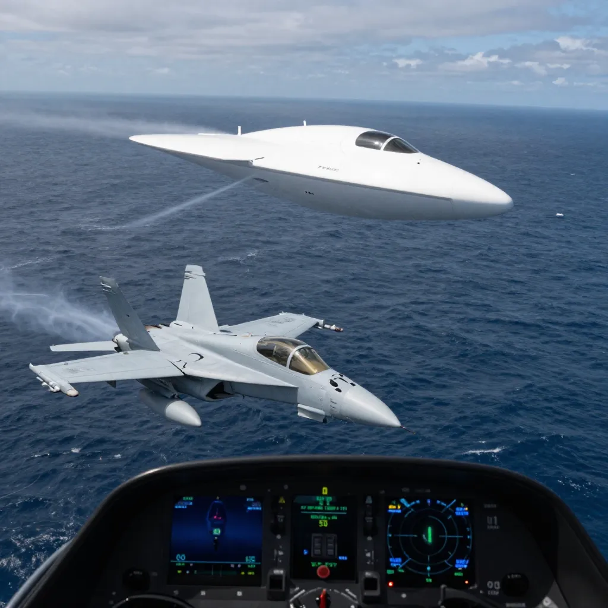

USS Nimitz Tic Tac Encounter: The Navy Pilot UFO Sighting That the Pentagon Couldn't Explain

On November 14, 2004, approximately 100 miles southwest of San Diego, California, two United States Navy F/A-18F Super Hornet pilots from the elite Strike Fighter Squadron VFA-41 — the Black Aces — were redirected from a routine training exercise to investigate an object that the most advanced radar system in the Navy had been tracking for two weeks. What they encountered over the Pacific Ocean that day would become the most well-documented, most credibly witnessed, and most thoroughly authenticated UFO incident in American military history — an encounter so extraordinary that the United States Department of Defense would spend years investigating it in secret, and eventually release the evidence to the public with an official statement confirming its authenticity.
The lead pilot was Commander David Fravor, a graduate of the Navy’s legendary TOPGUN fighter weapons school and the commanding officer of the Black Aces squadron aboard the aircraft carrier USS Nimitz (CVN-68). His wingman was Lieutenant Commander Jim Slaight. Both were combat-seasoned aviators with thousands of hours of flight time in the Navy’s most sophisticated fighter jet. They had been launched from the Nimitz that morning for a standard air defense training exercise as part of a larger carrier strike group exercise involving the USS Princeton (CG-59), a guided-missile cruiser equipped with the most advanced air defense radar system in the world. They expected a routine mission. They got something else entirely.
The story did not begin on November 14. It began approximately two weeks earlier, when Senior Chief Petty Officer Kevin Day, the radar operator aboard the USS Princeton, began noticing contacts on his AN/SPY-1 radar — the sophisticated phased-array system that forms the backbone of the Navy’s Aegis Combat System — that did not correspond to any known aircraft. The objects were tracking at altitudes between 25,000 and 60,000 feet, moving at relatively slow speeds of around 120 knots, and operating in groups of five to ten. Their flight patterns were erratic — hovering, zigzagging, making rapid altitude changes. But the most extraordinary characteristic was their ability to drop from 80,000 feet to sea level in seconds, a maneuver that would subject any known aircraft to G-forces that would destroy both the vehicle and its occupants.
Day was not an excitable amateur. He was a seasoned radar operator with years of experience on the SPY-1 system. He ran calibrations, checked for glitches, and consulted with other operators. The contacts persisted. Over the course of approximately two weeks, Day tracked the objects repeatedly, documenting their extraordinary flight characteristics. Finally, on November 14, after the objects were detected descending from high altitude to a position near the ocean surface, Day requested that the Princeton’s combat information center communicate the contact to the Nimitz air wing. Commander Fravor and Lieutenant Commander Slaight were redirected from their training exercise to investigate. A second two-seat F/A-18F, piloted by Lieutenant Commander Alex Dietrich, was also dispatched to provide additional observation.
Fravor and Slaight descended toward the coordinates provided by the Princeton’s radar. As they approached the area, Fravor looked down and saw something unexpected: a disturbed patch of ocean — a churning, foaming area of whitewater on an otherwise calm sea, approximately the size of a Boeing 737, with no visible cause. Hovering erratically about fifty feet above this churning water was an object that Fravor had never seen before — and as a TOPGUN graduate with thousands of hours of flight time, he had seen virtually every type of aircraft and missile in the U.S. arsenal and many foreign ones as well.
The object was wingless, tailless, and approximately 40 feet long, shaped like — as Fravor would later describe it — a Tic Tac mint. It was white, smooth, and featureless, with no visible engines, no flight control surfaces, no markings, no windows, and no exhaust. It hovered with an erratic, tumbling motion, oscillating across its long axis, as if it were bouncing on an invisible cushion of air. Fravor initiated a descent to get a closer look, descending in a circular pattern from about 20,000 feet. The Tic Tac began to rise, mirroring Fravor’s descent across the circle — as if it were aware of his approach and responding to it.
What happened next has been described as a “dogfight” — though it was the most one-sided dogfight in aviation history. Fravor cut across the circle to close the distance. The Tic Tac accelerated instantaneously, crossing Fravor’s flight path in a way that suggested it was not merely fast but capable of changing direction without decelerating — a violation of every principle of aerodynamics and physics that Fravor understood. It then departed at extraordinary speed. Fravor estimated that the object accelerated away at well beyond the speed of any aircraft he had ever encountered. The engagement lasted approximately five minutes.
But the strangest detail was still to come. After the Tic Tac departed, Fravor returned to the Nimitz. The Princeton’s radar operators reported that the object had reappeared at the Combat Air Patrol (CAP) point — a predetermined holding position for Navy aircraft — approximately 60 miles away, and that it had arrived there in seconds. The object, it appeared, not only knew where the CAP point was, but had traveled to it at a speed that no known aircraft or missile could achieve.
After Fravor’s encounter, another pilot, Lieutenant Chad Underwood, was launched from the USS Nimitz with an F/A-18F equipped with a Forward-Looking Infrared (FLIR) targeting pod — a sophisticated infrared camera system used to detect and track heat signatures. Underwood succeeded where Fravor had not: he captured the Tic Tac-shaped object on video. The FLIR footage shows a white, wingless, capsule-shaped object hovering in the air, making abrupt lateral movements that appear to defy the laws of aerodynamics. The object has no visible control surfaces, no exhaust plume, no wings, and no tail. At one point, it accelerates off the edge of the screen at extraordinary speed. The video was recorded on November 14, 2004, leaked to the internet in 2007, and publicly circulated in 2017. In April 2020, the Department of Defense officially released the footage, along with two other Navy UAP videos (“Gimbal” and “Go Fast”), confirming in an official statement that the videos were authentic, had been taken by Navy personnel, and depicted phenomena that remained unidentified.
The flight characteristics reported by Commander Fravor, observed on the USS Princeton’s radar, and captured on Chad Underwood’s FLIR video are not merely unusual — they are physically impossible according to current understanding of aerodynamics and materials science. The objects tracked by the Princeton’s SPY-1 radar were descending from 80,000 feet to sea level in seconds, implying speeds and G-forces that would destroy any known material. The Tic Tac that Fravor encountered had no wings, no engines, and no visible means of generating lift or propulsion, yet it hovered, accelerated, and changed direction with apparent ease. The object that reappeared at the CAP point 60 miles away did so in seconds — implying speeds of several thousand miles per hour, performed without a sonic boom, without an exhaust plume, and without any visible means of propulsion. Aerospace engineers have noted that these characteristics — instantaneous acceleration, transmedium travel (air to water and back), lack of thermal signature, and the absence of any conventional flight control surfaces — are consistent across multiple UAP encounters and represent capabilities that are decades or centuries beyond current technology.
The Nimitz encounter was not an isolated incident. In 2015, Navy pilots from the USS Theodore Roosevelt Carrier Strike Group operating off the East Coast of the United States reported a series of encounters with unidentified aerial phenomena that produced two additional videos later declassified by the Pentagon. The “Gimbal” video shows a rotating, saucer-shaped object moving against the wind with no visible means of propulsion. The “Go Fast” video shows a low-altitude, fast-moving object skimming above the ocean surface. In both cases, the pilots’ audio recordings captured their astonishment. The Roosevelt encounters confirmed that the Nimitz incident was not a one-time event but part of a pattern of UAP activity near U.S. naval assets that had been occurring for years.
For years after the Nimitz encounter, the incident remained largely unknown outside military circles. The FLIR video had been leaked to the internet in 2007 but attracted little mainstream attention. That changed in December 2017, when two reporters published an investigation revealing the existence of a classified Pentagon program called the Advanced Aerospace Threat Identification Program (AATIP), which had been investigating UAP encounters — including the Nimitz incident — since 2007. The program had been funded with $22 million in Department of Defense appropriations and was run by a former military intelligence officer named Luis Elizondo. The disclosure triggered a cascade of institutional responses. In June 2021, the Office of the Director of National Intelligence (ODNI) released a Preliminary Assessment on Unidentified Aerial Phenomena to Congress, acknowledging that UAP represented a challenge to national security and that the government was unable to explain 143 of 144 incidents reviewed. In 2022, the Department of Defense established the All-domain Anomaly Resolution Office (AARO) to centralize UAP investigations across all military branches. In September 2023, NASA released its Independent Study Team report on UAP, concluding that there was no evidence that UAP were extraterrestrial but calling for a systematic, scientific approach to studying them.
In July 2023, Commander David Fravor and Lieutenant Commander Alex Dietrich testified under oath before a House Oversight Subcommittee on unidentified anomalous phenomena. Fravor described the Tic Tac encounter in detail, telling lawmakers that the object demonstrated capabilities “far beyond anything that we have.” When asked by a congressman whether he believed the object posed a threat to national security, Fravor replied: “It has been 19 years and we haven’t figured it out. That is a threat.” Dietrich, who had been reluctant to speak publicly for years, confirmed her account of the encounter. The hearing marked a watershed moment: for the first time in American history, military witnesses to a UFO encounter had testified about their experience under oath before Congress, on camera, for the world to see.
The USS Nimitz Tic Tac encounter is not a distant, blurry shape in a dark lake, glimpsed for seconds by untrained observers in poor conditions. It is not a story filtered through decades of retelling, conspiracy theories, and contradictory accounts. It was witnessed by multiple highly trained military officers, detected on the most advanced radar system in the Navy, captured on infrared video by a military targeting pod, investigated by the Pentagon in a classified program, and eventually confirmed as authentic by the Department of Defense. It is, by any reasonable standard, the most credible UFO encounter in history. And it remains completely unexplained. The object Fravor encountered demonstrated capabilities that no known nation possesses. The Pentagon has confirmed the encounter happened. The video is real. The radar data is real. The witnesses are real. The question of what was in the sky over the Pacific Ocean on November 14, 2004, remains open — and it is one of the most important open questions in the history of science and national security.
📖 Recommended Reading: Military Response To Ufo Activity on Amazon. (As an Amazon Associate, we earn from qualifying purchases.)
References & Further Reading
- Wikipedia: Pentagon UFO Videos — Comprehensive account of the Nimitz, Gimbal, and Go Fast encounters, radar data, FLIR video, and subsequent investigations
- Wikipedia: AATIP — The Pentagon's classified UAP investigation program (2007-2012)
- CNBC: Pentagon Declassifies UFO Videos — Official DOD release of the Nimitz, Gimbal, and Go Fast footage
- CBS News: The Story Behind the Tic Tac UFO Sighting — Interviews with Fravor and Dietrich, Congressional testimony
- USA Today: Pentagon Declassifies Three Leaked Navy UFO Videos — DOD statement and video details
- Wikipedia: Unidentified Flying Object — Overview of UFO history, government investigations, and the modern UAP disclosure era
Editorial note: government investigations into UAP are ongoing and new information continues to emerge. See our Editorial Policy.